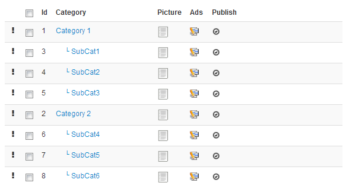
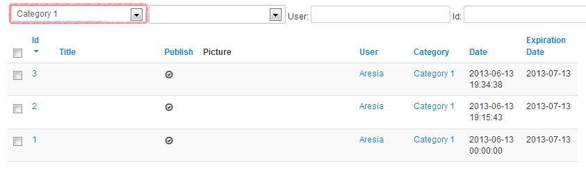

Several categories and subcategories are defined by default in AdsManager

You can see all default categories and sub-categories.
The black exclamation mark only appears if you are in Joomla!
3.x it allows you to rearrange the subcategories within their
parent category. You cannot put "SubCat1" in "Category 2" but
you can order "SubCat3" before "SubCat1" by dragging the black
exclamation mark up or down.
You can see pictures assigned to each category and a button ads.
Clicking on the button ads in the first row redirects to the page list of ads in administration filtered to display the chosen category.